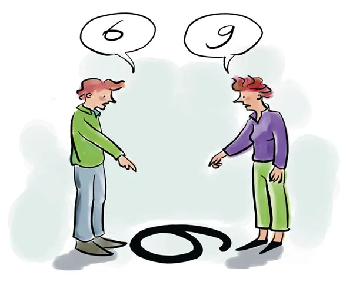
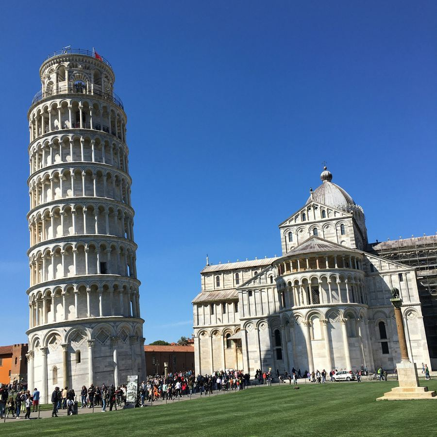
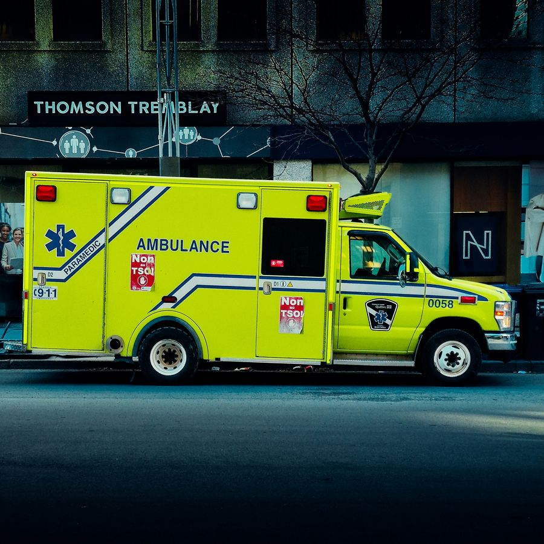
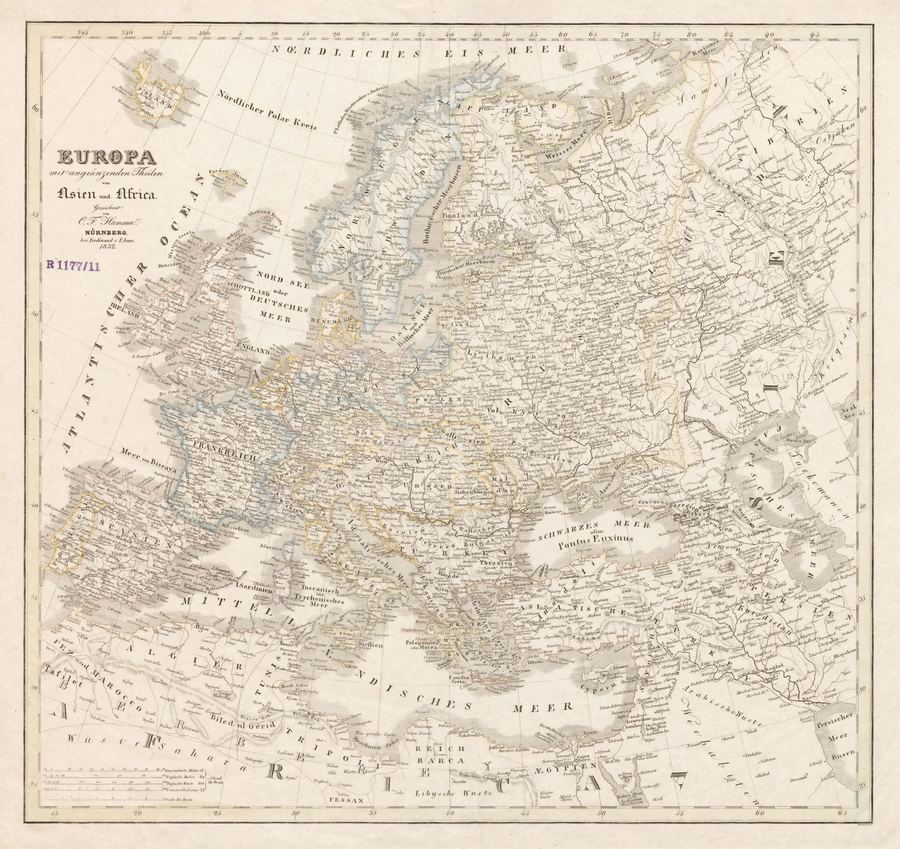
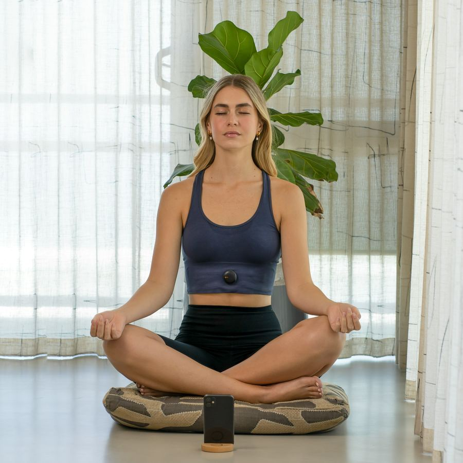

Ogni notizia ha tante voci quante sono le penne che la scrivono.
Un giornale sceglie un titolo, un altro ne sceglie uno opposto; uno mette la notizia in prima pagina, un altro la nasconde in fondo.
Nessuno mente del tutto, ma nessuno racconta tutto.
"Il Contribuente" nasce per mettere queste voci una accanto all'altra — italiane e straniere — senza sceglierne una al posto tuo.
I fatti restano fatti. Il pensiero, quello, resta tuo.
Edizione digitale3 Settembre 2026Rassegna stampa quotidiana
Il Contribuente
Italia, Europa, geopolitica, immigrazione, mercati e benessere — sintesi multi-fonte, con confronto diretto tra testate diverse sugli stessi fatti, senza etichette politiche.
★ NETANYAHU A GAZA: "CONTROLLIAMO IL 60% DELLA STRISCIA", NESSUN RITIRO PRIMA DEL DISARMO DI HAMAS★ NEPAL-TIBET, IL BILANCIO SALE A 1.130 MORTI E 4.462 DISPERSI★ RAI, DOPO RANUCCI ANCHE FRANCESCA FAGNANI PRONTA A LASCIARE: LA STAMPA ESTERA PARLA DI CASO DI LIBERTÀ DI STAMPA★ SPREAD BTP-BUND A 85 PUNTI, RENDIMENTI AL 4,22%: MASSIMO DAL 2022★ UE: "RISPONDEREMO" AI DRONI DI LIPSIA, BERLINO ACCUSA LA RUSSIA DI ATTACCO IBRIDO★ KIEV SOTTO ATTACCO CON 174 DRONI RUSSI, ZELENSKY: "CHIUDEREMO LO SPAZIO AEREO RUSSO"★ MILANO, RAPINA CON MACHETE ALLA STAZIONE DI COLOGNO SUD: DUE ARRESTI★ APPLE, JOHN TERNUS È IL NUOVO CEO DOPO 15 ANNI DI TIM COOK★ OPENAI CLASSIFICA ASTRA COME PRIMO MODELLO "CRITICAL" PER CYBERSECURITY, ANTHROPIC RISPONDE CON DUE NUOVI CLAUDE★ SCHENGEN, L'ITALIA PROROGA DI 15 GIORNI I CONTROLLI CON LA SPAGNA: MADRID RISPONDE CON CONTROLLI SPECULARI★ APNEA NOTTURNA, UNA PILLOLA SPERIMENTALE RIDUCE DEL 44% GLI EVENTI RESPIRATORI
Benzina
2,027€/L
Prezzo medio self, in lieve rialzo
self, media nazionale (Mimit, 2/9)
Diesel
2,131€/L
Prezzo medio self, in lieve rialzo
self, media nazionale (Mimit, 2/9)
Petrolio
~88€
Brent oltre 91$ al barile, +3,45%
al barile (FIRSTonline, 1/9)
Gas TTF
~71,50€
71,50€/MWh, +2,5%, tensioni Iran-Usa sui mercati energetici
al MWh, Amsterdam (Geagency, 1/9)
Oro
~119,45€/g
-0,51% oggi
al grammo (Il Sole 24 Ore, 2/9)
Bitcoin
~70.970€
76.646$, -0,33% in 24h
quotazione (cambio Eur/Usd ~1,08; Giocare in Borsa, 2/9)
Palestinesi uccisi
73.454
di cui 1.318 dalla tregua dell'11 ottobre 2025
dal 7/10/2023, dati sanitari Gaza (WAFA, 30/8/2026 ore 11:52)
La linea di demarcazione lungo cui si sono attestate le forze israeliane a Gaza dopo il cessate il fuoco dell'11 ottobre 2025: oltre quella linea, secondo Israele, l'esercito mantiene pieno controllo del territorio, mentre la parte restante è nominalmente sotto altre autorità.
✓ Oggi abbiamo confrontato 36 fonti su 26 testate diverse
Citazione del giorno · 1/2
"Controlliamo il 60% della Striscia. Non ci ritireremo prima del disarmo di Hamas."
— Benjamin Netanyahu, premier israeliano, in visita a una postazione dell'Idf sulla Linea Gialla a Gaza
Citazione del giorno · 2/2
"Lo spazio aereo russo si chiuderà, di fatto."
— Volodymyr Zelensky, presidente ucraino, avvertendo le compagnie aeree straniere dopo la notte di attacchi su Kiev
Morti nella frana/alluvione tra Nepal e Tibet
1.130
4.462 dispersi complessivi, bilancio in aggiornamento
Controllo israeliano dichiarato della Striscia di Gaza
60%
secondo Netanyahu, dato non verificato indipendentemente
Spread BTp-Bund, massimo dalla crisi energetica del 2022
85 pb
rendimento del BTp decennale al 4,22%
Riduzione degli eventi respiratori con la pillola sperimentale AD109
-44%
studio di fase 3 su 646 pazienti con apnea notturna, contro placebo
Dati: Leggo/Ansa per Nepal-Tibet, Ansa per la dichiarazione di Netanyahu su Gaza, QuiFinanza per spread e rendimento BTp, ScienceDaily/American Thoracic Society per lo studio sull'apnea notturna. Numeri soggetti ad aggiornamento nelle prossime ore.
Cosa succede oggi
9/9Evento Apple "Surprise and Shine": attesi iPhone 18 Pro e il primo iPhone pieghevole, il primo grande appuntamento pubblico della gestione Ternus
16/9Scadenza della nuova proroga dello stop Schengen tra Italia e Spagna
15/9Voto finale al Senato sulla riforma della legge elettorale; mobilitazione delle opposizioni annunciata per lo stesso giorno
17/9Il Cda Rai discute il caso Ranucci
Confronto
Netanyahu a Gaza: "Controlliamo il 60% della Striscia, nessun ritiro prima del disarmo di Hamas"
Da sapere per capire
Dall'11 ottobre 2025 è in vigore una tregua tra Israele e Hamas, ma gli scontri localizzati non si sono mai fermati del tutto. La "Linea Gialla" è la linea di demarcazione lungo cui si sono attestate le forze israeliane dopo il cessate il fuoco: oltre quella linea, secondo Israele, l'esercito mantiene pieno controllo del territorio.
Il fatto
Il 2 settembre il premier israeliano Benjamin Netanyahu, in visita a una postazione dell'Idf sulla Linea Gialla, ha dichiarato che Israele "controlla il 60% della Striscia" e che non ci sarà alcun ritiro prima del completamento del disarmo di Hamas. Ha aggiunto che l'obiettivo di disarmare il gruppo islamista è "in gran parte raggiunto" e ha rivendicato l'arresto, il giorno prima, del capo della sicurezza interna di Hamas. Non sono stati resi noti né i criteri con cui viene calcolato quel 60%, né una verifica indipendente del dato.

Prospettiva israeliana — Netanyahu, Idf
Un cessate il fuoco che regge solo grazie alla presenza militare sul terreno
Per Netanyahu il controllo del 60% del territorio non è un'occupazione permanente ma la condizione necessaria perché la tregua tenga: senza una presenza israeliana lungo la Linea Gialla, sostiene, Hamas potrebbe riorganizzarsi militarmente. L'arresto del responsabile della sicurezza interna del gruppo viene presentato come una prova che il lavoro di disarmo sta avanzando concretamente, non solo sulla carta.
Il governo israeliano collega esplicitamente la fine della presenza militare al completamento di due condizioni: la consegna delle armi pesanti di Hamas e la fine della sua capacità di comando sul territorio. Fino ad allora, secondo questa lettura, qualunque ritiro sarebbe prematuro e rischierebbe di vanificare i risultati ottenuti dall'inizio della tregua.
Prospettiva palestinese e critica — WAFA, Al Jazeera
Un dato non verificabile, mentre il bilancio umano continua a salire
Le fonti palestinesi e diversi osservatori internazionali non hanno modo di verificare in modo indipendente la cifra del 60%, che arriva soltanto dalla parte israeliana e non è accompagnata da mappe o criteri pubblici. L'agenzia palestinese Wafa continua nel frattempo ad aggiornare il bilancio delle vittime del conflitto dal 7 ottobre 2023, che ha superato quota 73.000, di cui oltre 1.300 dopo la tregua dell'11 ottobre 2025.
Da questa prospettiva, il linguaggio del "controllo" rischia di normalizzare una presenza militare israeliana su gran parte del territorio come condizione permanente e non transitoria, spostando nei fatti la definizione dei confini della tregua a una sola delle parti in causa, senza un ruolo verificabile dei mediatori internazionali nel confermare i dati sul campo.
La stampa internazionale segue il caso Ranucci e la corsa dello spread italiano
Da sapere per capire
La rimozione del giornalista Sigfrido Ranucci da Report e la nuova impennata dei tassi sul debito pubblico italiano sono due vicende distinte, ma entrambe seguite con attenzione da testate e agenzie internazionali come banco di prova della tenuta istituzionale ed economica del governo Meloni.
Il caso Ranucci diventa un caso di libertà di stampa raccontato all'estero
La rimozione di Sigfrido Ranucci dalla guida di Report, decisa dalla Rai il 28 agosto, è raccontata da testate internazionali come un caso di libertà di stampa più che come un semplice avvicendamento televisivo. Un articolo di approfondimento pubblicato il 2 settembre ricostruisce la vicenda a partire dall'attentato dinamitardo subito da Ranucci nell'ottobre 2025 fino alla sua rimozione, definendola una storia "iniziata come un attacco a un giornalista" e "diventata una battaglia sulla libertà di stampa e l'indipendenza della Rai pubblica".
Il pezzo riporta che esponenti della maggioranza, tra cui Matteo Salvini e Ignazio La Russa, hanno accolto con favore la sostituzione di Ranucci, mentre le opposizioni l'hanno definita un attacco al giornalismo d'inchiesta; cita inoltre agenzie internazionali secondo cui "la struttura di governance della Rai la rende vulnerabile all'influenza politica". La testata segnala anche la mobilitazione della redazione di Report, con minacce di sciopero e uscite collettive.
Spread ai massimi da tre anni: i mercati internazionali guardano ai BTp
Lo spread tra BTp e Bund tedeschi ha aperto il 2 settembre a 85 punti base, un nuovo massimo dalla crisi energetica del 2022, con il rendimento del decennale italiano salito al 4,22%. La stampa economica internazionale inquadra il rialzo come parte di una tensione più ampia sui titoli di Stato europei, in un contesto di incertezza legata sia a fattori interni — dal debito pubblico alla tenuta della maggioranza — sia internazionali, a partire dalla crisi in Medio Oriente.
Analisti citati da testate finanziarie internazionali sottolineano che i rendimenti dei BTp stanno crescendo "a ritmi che non si vedevano dalla crisi energetica del 2022", con un contagio che coinvolge anche altri mercati obbligazionari europei. Resta da vedere se si tratti di un picco temporaneo, legato alla tensione Iran-Usa e ai suoi effetti sul prezzo del petrolio, o dell'inizio di una fase più duratura di sfiducia verso il debito italiano.
Rai, la crisi si allarga dopo il caso Ranucci; il Senato verso il voto sulla nuova legge elettorale
Da sapere per capire
Il 28 agosto la Rai ha rimosso Sigfrido Ranucci dalla guida di Report, affidandola a Giulia Presutti e Daniele Piervincenzi. Parallelamente, il Senato lavora dal 29 luglio a una riforma della legge elettorale con voto finale fissato per il 15 settembre, dopo settimane di scontro sugli emendamenti.

Non solo Ranucci: anche Francesca Fagnani pronta a lasciare la Rai
Il malessere nella Rai non riguarda solo Report. Secondo il Quotidiano Nazionale, Francesca Fagnani, conduttrice di Belve, intenderebbe rescindere il proprio contratto in esclusiva con l'azienda, citando "divergenze ideologiche" e questioni legate ai cachet degli ospiti. La sua eventuale uscita arriverebbe dopo la mancata assegnazione a Fagnani della conduzione di "Chi l'ha visto?", affidata invece a Raffaella Griggi dopo l'addio di Federica Sciarelli.
Una partenza di Fagnani rappresenterebbe una perdita significativa per gli ascolti Rai, con "Belve" che ha toccato picchi del 12% di share, e per gli accordi commerciali legati al programma. Il caso si somma a una lista di addii e tensioni che negli ultimi mesi ha coinvolto anche altri volti storici dell'azienda, in un clima già teso per lo stato di agitazione proclamato dalla redazione di Report dopo la rimozione di Ranucci.
Legge elettorale, 697 emendamenti al Senato: centrodestra valuta ballottaggio e preferenze
Prosegue in commissione al Senato l'esame della riforma della legge elettorale, con circa 697 emendamenti depositati e il voto finale d'Aula fissato per il 15 settembre. Il centrodestra starebbe valutando l'introduzione di un ballottaggio nazionale e del voto di preferenza, mentre le opposizioni preparano una propria batteria di emendamenti e annunciano mobilitazioni per il giorno del voto finale.
Il nodo più delicato resta quello del meccanismo di attribuzione dei seggi e dell'eventuale premio di maggioranza legato al ballottaggio, che le opposizioni giudicano potenzialmente lesivo della rappresentanza proporzionale. Il calendario parlamentare di settembre prevede che la discussione generale in Aula preceda di alcuni giorni il voto finale, lasciando aperta la possibilità di ulteriori modifiche al testo licenziato in commissione.
Milano, rapina con machete alla stazione di Cologno Sud; altri tre episodi distinti tra Lazio e Campania
Quattro episodi distinti avvenuti tra il 1° e il 2 settembre in province diverse: cronaca locale, non un fenomeno unico o coordinato.
Da sapere per capire
Le rapine e le aggressioni in luoghi pubblici restano un tema ricorrente nel dibattito sulla sicurezza urbana, spesso raccontato in modo frammentario da cronache locali diverse.

Milano, rapina con machete alla stazione di Cologno Sud: due arresti
Due giovani sono stati arrestati il 2 settembre per una rapina con machete compiuta alla stazione della metropolitana di Cologno Sud, alla periferia di Milano. Le vittime sono state avvicinate e minacciate con l'arma da taglio prima di essere derubate di denaro e oggetti personali. L'intervento tempestivo delle forze dell'ordine ha permesso di identificare e bloccare i due responsabili poco dopo i fatti.
Gli agenti hanno recuperato il machete utilizzato durante l'aggressione, ora acquisito come prova. Le indagini della polizia locale proseguono per accertare se i due giovani siano collegati ad altri episodi simili avvenuti nella stessa zona della metropolitana milanese nelle settimane precedenti.
Anzio, rapina con spranga e coltello alla stazione di Lavinio: uomo ferito
Un uomo è stato aggredito con una spranga e ferito con un coltello alla stazione di Lavinio, nel comune di Anzio, dopo essersi rifiutato di consegnare denaro agli aggressori, che gli hanno anche strappato lo zaino. La vittima è stata soccorsa e trasportata in ospedale; le sue condizioni non sarebbero gravi. Sono in corso due arresti da parte delle forze dell'ordine.
Gli inquirenti stanno ricostruendo la dinamica esatta dell'aggressione attraverso le testimonianze raccolte sul posto e le immagini delle telecamere di sorveglianza della stazione, per verificare se i responsabili già fermati siano gli unici coinvolti nell'episodio.
San Felice a Cancello, rapinata la collana a una 75enne per colpire il marito
Una donna di 75 anni è stata aggredita a San Felice a Cancello, in provincia di Caserta, da una persona che le ha strappato la collana dal collo. Secondo le prime ricostruzioni, il gesto sarebbe stato indirizzato in realtà a colpire il marito della vittima, coinvolto in dinamiche personali con l'aggressore. La donna non ha riportato ferite gravi.
I carabinieri della zona stanno indagando per identificare con certezza l'autore del gesto e chiarire il movente esatto dietro un'aggressione che, secondo quanto riportato dalla cronaca locale, si inserirebbe in un contesto di tensioni personali pregresse più che in un episodio predatorio comune.
Marcianise, giovane aggredito per una rapina finisce in ospedale: due arresti
Un giovane è stato aggredito a scopo di rapina a Marcianise (Caserta) ed è finito in ospedale per le conseguenze del pestaggio. Le forze dell'ordine hanno arrestato due dei responsabili, mentre le ricerche di un terzo complice sono ancora in corso. La vittima è stata refertata e dimessa nelle ore successive.
Le indagini dei carabinieri si concentrano ora sull'identificazione del terzo componente del gruppo, ricercato attraverso testimonianze e immagini di videosorveglianza raccolte nella zona in cui si è consumata l'aggressione.
Ue, "risponderemo" ai droni di Lipsia: Berlino accusa la Russia di un attacco ibrido
Da sapere per capire
Ad agosto droni-bomba erano stati individuati nei pressi dell'aeroporto di Lipsia, in Germania: uno su una via di rullaggio vicino ad aerei Antonov ucraini, un altro entrato in collisione con un volo DHL, un terzo trovato nel vicino Brandeburgo.

Berlino accusa Mosca per i droni di Lipsia, von der Leyen: "Risponderemo"
Il governo tedesco guidato dal cancelliere Friedrich Merz ha attribuito formalmente ai servizi di intelligence russi la responsabilità dei droni esplosivi individuati nei pressi dell'aeroporto di Lipsia, definendola un'operazione di guerra ibrida contro le infrastrutture e la stabilità politica tedesca. La presidente della Commissione europea Ursula von der Leyen ha promesso una risposta, avvertendo che i tentativi di intimidazione russi "sono vani e falliranno".
Tra le misure allo studio da parte tedesca figurano la chiusura del consolato russo a Bonn e della Casa russa a Berlino, oltre a una maggiore pressione sulla cosiddetta "flotta ombra" russa. Il segretario generale della Nato Mark Rutte ha sottolineato che i tentativi di minare l'unità occidentale e il sostegno all'Ucraina "non avranno successo". Il presidente russo Vladimir Putin ha respinto le accuse, sostenendo che Merz le userebbe per ragioni di politica interna legate alle difficoltà economiche tedesche.
La premier italiana Giorgia Meloni e il ministro degli Esteri Antonio Tajani hanno espresso solidarietà alla Germania, impegnandosi per una risposta europea unitaria alle "intimidazioni ibride" russe, in un contesto di crescente coordinamento tra Commissione europea e Nato sul fronte della sicurezza continentale.
Ue: "Valuteremo la proroga dello stop Schengen tra Italia e Spagna"
La Commissione europea ha fatto sapere che valuterà l'ulteriore proroga della sospensione degli accordi di Schengen tra Italia e Spagna, decisa da Roma dopo la crisi migratoria di Ceuta di inizio agosto e già estesa una prima volta il 1° settembre. Bruxelles segue con attenzione la vicenda, che coinvolge due Stati membri e rischia di creare un precedente sull'uso delle deroghe alla libera circolazione per motivi di ordine pubblico legati all'immigrazione.
Il caso si inserisce in un dibattito europeo più ampio sui limiti delle sospensioni nazionali di Schengen, strumento pensato per situazioni eccezionali e temporanee ma sempre più spesso utilizzato dagli Stati membri come leva politica nei rapporti bilaterali su temi migratori.
Kiev sotto attacco con 174 droni russi; sale a 1.130 morti il bilancio della frana Nepal-Tibet
Da sapere per capire
La frana e alluvione tra Nepal e Tibet, innescata a fine agosto dal collasso di un ghiacciaio, resta una delle peggiori catastrofi naturali della regione negli ultimi anni, con il bilancio delle vittime ancora in aggiornamento.
Nepal-Tibet, il bilancio sale a 1.130 morti e 4.462 dispersi
Il bilancio della frana-alluvione tra Nepal e Tibet è salito a 1.130 morti e 4.462 dispersi secondo le ultime cifre diffuse il 2 settembre, in aumento rispetto alle stime dei giorni precedenti. I soccorritori continuano a scavare tra i detriti e nei tunnel delle centrali idroelettriche colpite, mentre le autorità nepalesi hanno già annunciato l'intenzione di chiedere risarcimenti climatici ai maggiori produttori mondiali di gas serra.
La progressione del bilancio, quasi raddoppiato rispetto ai dati di fine agosto, riflette sia il ritrovamento di nuovi corpi sia il lavoro ancora in corso per raggiungere le aree più isolate colpite dalla frana. Le autorità cinesi confermano un bilancio separato per il versante tibetano, di entità nettamente inferiore ma di difficile verifica indipendente.
Kiev sotto assedio: 174 droni russi nella notte, Putin minaccia il Regno Unito
La Russia ha lanciato durante la notte 174 droni d'attacco e quattro missili contro l'Ucraina, colpendo tra le altre Kiev per il settimo giorno consecutivo, Odessa e Dnipro: almeno una persona è morta e oltre una dozzina sono rimaste ferite. A Odessa un edificio residenziale di 24 piani è stato danneggiato, con otto feriti tra cui un bambino.
Il presidente ucraino Volodymyr Zelensky ha avvertito che, in risposta agli attacchi, lo spazio aereo russo "si chiuderà di fatto" per gli aerei stranieri, lasciando intendere nuove rappresaglie con droni a lungo raggio. Il presidente russo Vladimir Putin ha accusato Kiev di "terrorismo di Stato" e non ha escluso di colpire installazioni militari britanniche se Londra continuerà a fornire armi all'Ucraina; il ministero della Difesa russo sostiene di aver abbattuto 130 droni ucraini su 11 regioni, oltre a Crimea e Mar Nero. Nella regione russa di Belgorod, attacchi ucraini avrebbero causato due morti e 16 feriti.
Spread BTp-Bund a 85 punti, rendimenti al 4,22%: la tensione Iran-Usa pesa sui mercati
Da sapere per capire
Lo spread è la differenza tra il rendimento dei titoli di Stato italiani (BTp) e quelli tedeschi (Bund), considerati il parametro di riferimento più sicuro in Europa: più lo spread sale, più alto è il premio al rischio richiesto dai mercati per finanziare il debito pubblico italiano.
Spread BTp-Bund a 85 punti base, rendimento decennale al 4,22%: massimo dal 2022
Lo spread tra BTp e Bund tedeschi ha aperto il 2 settembre a 85 punti base, il livello più alto dalla crisi energetica del 2022, con il rendimento del BTp decennale salito al 4,22%. L'aumento riflette sia fattori nazionali legati al debito pubblico italiano sia una pressione più ampia sui titoli di Stato europei, in un clima di mercati nervosi per la crisi in Medio Oriente.
Secondo gli osservatori di mercato, i rendimenti dei BTp stanno crescendo "a ritmi che non si vedevano dalla crisi energetica del 2022", con un effetto di trascinamento anche su altri Paesi dell'area euro con debito elevato. Resta da capire se si tratti di una fiammata temporanea legata alla tensione Iran-Usa e ai suoi effetti sul prezzo dell'energia, o dell'inizio di una fase più strutturale di sfiducia verso il debito italiano.
Petrolio sopra i 91 dollari, gas in rialzo: la guerra Iran-Usa spinge i prezzi dell'energia
Il petrolio Brent è salito sopra i 91 dollari al barile, in rialzo del 3,45%, mentre il gas TTF di Amsterdam ha toccato circa 71,50 euro al megawattora (+2,5%): entrambi i rialzi sono legati alle tensioni tra Iran e Stati Uniti nello Stretto di Hormuz, da cui transita circa un quinto del petrolio mondiale. Le Borse europee hanno aperto in ordine sparso, con Milano che tiene nonostante il contesto.
L'aumento dei costi energetici si riflette anche sui prezzi alla pompa in Italia, con benzina e diesel in lieve rialzo secondo i dati medi nazionali del Mimit. Gli analisti restano divisi sulla durata dell'impatto: alcuni lo considerano temporaneo e legato all'incertezza militare, altri temono un effetto più duraturo se il conflitto dovesse estendersi ulteriormente nell'area del Golfo.
Bitcoin scende sotto i 77mila dollari, oro in lieve calo: mercati in attesa della Fed
Il bitcoin è sceso a circa 76.600 dollari, in calo dello 0,33% nelle ultime 24 ore, mentre l'oro ha perso lo 0,51% nella giornata, attestandosi intorno ai 119 euro al grammo. Secondo gli analisti, gli investitori restano cauti in vista delle prossime mosse della Federal Reserve sui tassi d'interesse, in un contesto reso ancora più incerto dalle tensioni geopolitiche in Medio Oriente.
Il calo simultaneo di bitcoin e oro, tradizionalmente considerati beni rifugio in momenti di incertezza, viene letto da alcuni operatori come un segnale di cautela generalizzata piuttosto che di fiducia nei mercati tradizionali, con gli investitori che preferiscono restare liquidi in attesa di maggiore chiarezza sulle prossime decisioni di politica monetaria.
Una pillola contro l'apnea notturna riduce del 44% gli eventi respiratori; screening genetico per i neonati
Da sapere per capire
Uno studio clinico di fase 3 e una serie di programmi internazionali di screening genomico neonatale offrono due esempi diversi di come la medicina di precisione stia cambiando prevenzione e cura: da un lato un farmaco alternativo a un dispositivo, dall'altro l'uso del sequenziamento del genoma fin dalla nascita.

Apnea notturna, una pillola riduce del 44% gli eventi respiratori: addio al CPAP?
Uno studio randomizzato di fase 3 chiamato "SynAIRgy", condotto su 646 adulti con apnea ostruttiva del sonno in 69 centri tra Stati Uniti e Canada, ha mostrato che il farmaco sperimentale AD109 riduce del 44% gli eventi respiratori notturni, contro il 18% ottenuto con il placebo. Oltre il 40% dei pazienti trattati è passato a una categoria di gravità inferiore della malattia, e il 18% ha raggiunto il controllo completo.
Lo studio, guidato da Patrick John Strollo dell'Università di Pittsburgh, ha coinvolto pazienti che non tolleravano o rifiutavano la terapia standard con il dispositivo CPAP (la maschera a pressione positiva usata per tenere aperte le vie aeree durante il sonno). Il farmaco ha ottenuto la designazione "Fast Track" dalla Food and Drug Administration statunitense, con la società produttrice Apnimed che punta a una decisione regolatoria entro il primo trimestre del 2027.
Circa il 21% dei partecipanti ha interrotto il trattamento per effetti collaterali descritti come lievi: secchezza delle fauci, nausea, insonnia e difficoltà urinarie. Si tratta comunque di un risultato di uno studio clinico controllato, non ancora di un farmaco approvato: la strada verso la disponibilità sul mercato passa ancora dalla valutazione delle autorità regolatorie.
Screening genetico dei neonati: cosa dicono i grandi studi internazionali in corso
Diversi programmi di ricerca internazionali — BabyScreen+ in Australia, BabyDetect in Belgio, GUARDIAN negli Stati Uniti e Generation Study nel Regno Unito — stanno testando il sequenziamento dell'intero genoma come strumento di screening neonatale, in aggiunta ai test tradizionali. Si tratta in tutti i casi di studi osservazionali prospettici, non ancora di pratica clinica standard.
I risultati preliminari mostrano tassi di individuazione di condizioni genetiche compresi tra l'1,6% (BabyScreen+) e il 2,7% (GUARDIAN, sui primi 15.000 partecipanti), con una parte dei casi non individuabile con i metodi di screening convenzionali. Generation Study ha permesso in alcuni casi di diagnosticare un deficit dell'ormone della crescita anni prima rispetto ai tempi abituali, con benefici concreti per un intervento precoce.
Restano però nodi irrisolti: i pannelli genetici analizzati variano molto da uno studio all'altro (da 169 a 605 geni), in GUARDIAN 64 neonati inizialmente segnalati come a rischio non hanno mostrato poi alcun segno di malattia, e questioni come i costi, la capacità di offrire consulenza genetica a tutte le famiglie coinvolte, la privacy dei dati genetici e il rischio di discriminazioni assicurative restano ostacoli aperti a una diffusione più ampia.
John Ternus è il nuovo Ceo di Apple dopo 15 anni di Tim Cook
Da sapere per capire
Il passaggio di consegne era stato annunciato ad aprile: Tim Cook diventa presidente esecutivo, mentre John Ternus, storico responsabile dell'ingegneria hardware, assume la carica di amministratore delegato con effetto dal 1° settembre.
John Ternus succede a Tim Cook come Ceo di Apple dopo 15 anni
John Ternus è ufficialmente diventato il nuovo amministratore delegato di Apple il 1° settembre, succedendo a Tim Cook dopo 15 anni alla guida dell'azienda. Cook resta in Apple come presidente esecutivo. Ternus, che ha guidato per anni l'ingegneria hardware dell'azienda, era considerato da tempo il favorito per la successione.
Il cambio al vertice arriva in un momento delicato per Apple sul fronte dell'intelligenza artificiale, dove l'azienda è percepita come in ritardo rispetto a concorrenti come Google e OpenAI. Diverse testate internazionali sottolineano che la prima grande sfida di Ternus sarà proprio dimostrare una strategia IA più convincente, mentre l'azienda si prepara all'evento di metà settembre con i nuovi iPhone.
Nvidia annuncia DLSS 5 con rendering neurale "guidato in 3D"
Nvidia ha annunciato la nuova versione della sua tecnologia di upscaling grafico, DLSS 5, basata su un sistema di rendering neurale "3D-guided" pensato per migliorare ulteriormente la qualità delle immagini generate nei videogiochi riducendo il carico di calcolo richiesto alle schede video.
L'annuncio si inserisce in una settimana intensa per le grandi aziende tecnologiche, con Google che ha presentato "Pics", un nuovo strumento generativo pensato per competere con Canva nel settore del design grafico assistito dall'intelligenza artificiale, e Waymo che ha esteso il servizio di robotaxi a San Diego, Denver e Tampa.
OpenAI classifica Astra come primo modello "Critical" per cybersecurity; Anthropic risponde con due nuovi Claude
Da sapere per capire
I grandi laboratori di IA classificano i propri modelli per livello di rischio in ambiti sensibili come la cybersecurity: un modello "critico" è ritenuto capace di operazioni che, in mani sbagliate, potrebbero causare danni gravi, e per questo viene rilasciato con accessi fortemente limitati.
OpenAI conferma Astra: è il primo suo modello classificato "Critical" per cybersecurity
OpenAI ha confermato che il suo nuovo sistema Astra ha raggiunto la classificazione interna "Critical" per la cybersecurity, la prima nella storia dell'azienda: nei test, il modello è stato in grado di individuare vulnerabilità "zero-day" sconosciute e di concatenarle in attacchi informatici multi-vettore contro sistemi reali protetti.
Proprio per il livello di rischio implicato, OpenAI limiterà inizialmente l'accesso alle capacità più avanzate di Astra attraverso un programma ristretto denominato "Daybreak Blue", con protezioni supplementari che l'azienda stessa ammette potranno generare falsi positivi nell'uso quotidiano del modello.
Anthropic risponde a OpenAI con due nuovi modelli: Claude Fable 5.1 e Claude Mythos 5.1
Anthropic ha rilasciato due nuovi modelli della famiglia Claude: Fable 5.1, ad accesso pubblico, e Mythos 5.1, riservato a ricercatori ed esperti di cybersecurity. I due modelli condividono la stessa architettura di base ma applicano livelli di protezione differenti a seconda del pubblico a cui sono destinati.
Fable 5.1 mostra miglioramenti nella scrittura di codice, raggiungendo il 73,4% su un benchmark di riferimento per la programmazione, e riduce i costi di utilizzo del 25% grazie a una cache più economica, pari a 0,25 dollari per milione di token, il 75% in meno rispetto ai modelli precedenti.
Schengen, proroga dei controlli con la Spagna; Piantedosi annuncia un decreto a settembre sui rimpatri rapidi
Da sapere per capire
L'Italia ha introdotto controlli di frontiera con la Spagna il 1° agosto dopo la crisi migratoria di Ceuta, l'enclave spagnola in Marocco dove oltre 70mila persone erano arrivate in un solo giorno. Poiché i due Paesi non confinano via terra, i controlli riguardano passeggeri di navi e aerei.
Schengen, l'Italia proroga di 15 giorni i controlli con la Spagna: Madrid risponde con controlli speculari
Il governo italiano ha prorogato di altri 15 giorni, a partire dal 1° settembre, i controlli di frontiera introdotti ad agosto nei confronti della Spagna dopo la crisi migratoria di Ceuta. Il ministro dell'Interno Matteo Piantedosi ha informato telefonicamente l'omologo spagnolo in quella che è stata definita una conversazione "costruttiva". La Spagna ha risposto applicando controlli speculari su voli e traghetti provenienti dall'Italia.
Il premier spagnolo Pedro Sánchez ha definito la situazione "assurda", sostenendo che la maggior parte dei migranti coinvolti nella crisi di Ceuta era rientrata in Marocco entro poche ore e accusando Roma di sfruttare l'episodio per scopi politici interni legati al tema dell'immigrazione. Il governo italiano respinge questa lettura e difende la misura come necessaria per motivi di ordine pubblico.
Piantedosi annuncia per settembre un decreto con rimpatri più veloci per i soggetti pericolosi
Il ministro dell'Interno Matteo Piantedosi ha annunciato che a settembre il governo presenterà un nuovo decreto per "garantire più sicurezza", che introdurrà procedure di rimpatrio più rapide per gli stranieri considerati pericolosi per l'ordine pubblico. L'annuncio arriva nel quadro del più ampio pacchetto di misure sulla sicurezza urbana e l'immigrazione che il governo intende portare avanti nella sessione parlamentare autunnale.
Il provvedimento si inserisce nel solco del precedente decreto Piantedosi, che già regola i rapporti tra navi delle Ong e autorità di soccorso in mare. Non sono ancora stati resi noti i dettagli tecnici sulle nuove procedure accelerate, né una tempistica precisa per l'approdo del testo in Consiglio dei ministri.
Sbarchi, minori non accompagnati e rimpatri italiani (dati Viminale, periodi diversi indicati per ciascun dato, per evitare di sommare numeri di periodi diversi senza dirlo). Ultimo aggiornamento disponibile del cruscotto statistico: 28 agosto 2026.
Sbarchi in Italia
19.263
1 gen - 28 ago 2026, Viminale — -55% sul 2025 (42.443), -53% sul 2024 (40.896)
Rimpatri dall'Italia
5.688
1 gen - 28 ago 2026, Viminale — 4.863 forzati, 825 volontari assistiti
Minori non accompagnati
3.543
1 gen - 24 ago 2026, Viminale — 7.299 nello stesso periodo 2025
Sbarchi in Italia per nazionalità principale
1° gennaio - 28 agosto 2026 (Ministero dell'Interno)
Bangladesh
5.123
Somalia
2.273
Algeria
2.027
Sudan
1.617
Pakistan
1.376
Egitto
1.244
Altre nazionalità
5.603
Le prime sei nazionalità coprono circa il 71% degli sbarchi totali; il resto (Eritrea, Tunisia, Mali, Nigeria, Iran e altri) è qui riunito in "altre nazionalità" per leggibilità. Il totale (19.263) è quello riportato in cima alla pagina.
Vedi tabella dati completa
Nazionalità
Sbarchi
Periodo
Bangladesh
5.123
1 gen - 28 ago 2026
Somalia
2.273
1 gen - 28 ago 2026
Algeria
2.027
1 gen - 28 ago 2026
Sudan
1.617
1 gen - 28 ago 2026
Pakistan
1.376
1 gen - 28 ago 2026
Egitto
1.244
1 gen - 28 ago 2026
Eritrea
1.089
1 gen - 28 ago 2026
Tunisia
978
1 gen - 28 ago 2026
Altre nazionalità
1.536
1 gen - 28 ago 2026
Totale Italia
19.263
1 gen - 28 ago 2026
Fonte: Cruscotto statistico giornaliero, Dipartimento Libertà Civili e Immigrazione — Ministero dell'Interno (dato all'8:00 del 28/8/2026).
Sbarchi totali per anno: 2024, 2025, 2026 a confronto
1° gennaio - 28 agosto, anni a confronto (Ministero dell'Interno)
2025
42.443
2024
40.896
2026
19.263 -55%
Il calo del 2026 rispetto ai due anni precedenti si conferma su tutto il periodo osservato, con un ritmo di arrivi che dall'estate resta stabilmente più basso rispetto agli stessi mesi del 2024 e del 2025.
Fonte: Cruscotto statistico giornaliero, Ministero dell'Interno (dato al 28/8/2026).
Rimpatri dall'Italia, per tipologia
1° gennaio - 28 agosto 2026 (Ministero dell'Interno)
Forzati
4.863
Volontari assistiti
825
Il totale di 5.688 rimpatri nel 2026 supera già l'intero anno 2025 (4.274) e il 2024 (3.565): a trainare la crescita sono soprattutto i rimpatri volontari assistiti, più che raddoppiati rispetto al 2025 (435).
Fonte: Cruscotto statistico giornaliero, Ministero dell'Interno (forzati al 28/8, volontari assistiti al 26/8/2026).